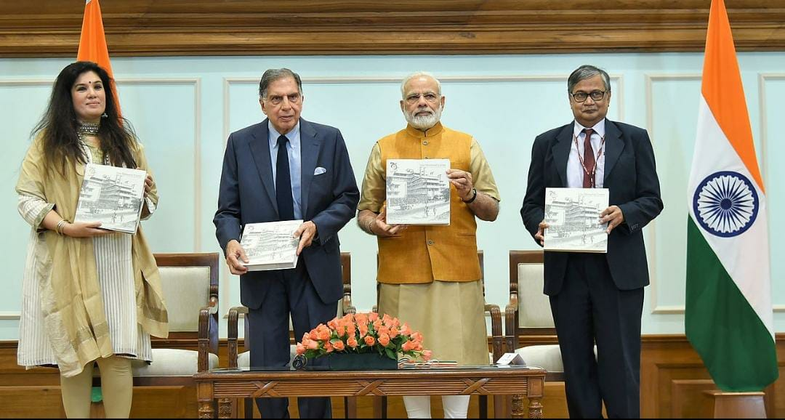

Medicine
Tata was a supporter of education, medicine and rural development, and considered a leading philanthropist in India. Ratan Tata was the highest international donor to the Cornell University
1984 Anti-Sikh Pogrom victims
In the aftermath of the 1984 Anti-Sikh Riots, Tata extended his support to affected Sikh survivors by donating trucks through Tata Motors. This enabled Sikh truck drivers who had lost their vehicles during the violence to regain their livelihoods. His charitable donation enabled many Sikh victims to rebuild their lives and businesses. Following this act, Sikh drivers in Punjab and other parts of India continue to remain loyal customers of Tata trucks.
University of New South Wales
Tata supported University of New South Wales Faculty of Engineering to develop capacitive deionisation to provide improved water for challenged areas.
